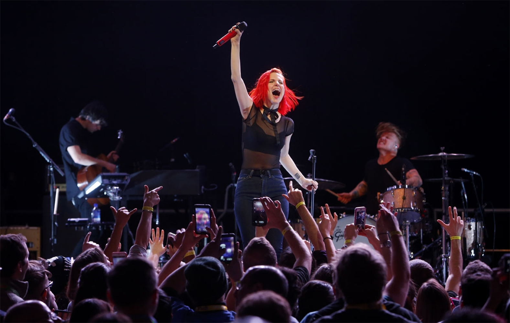
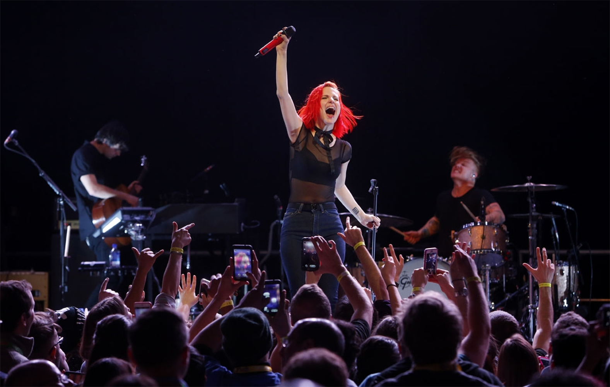
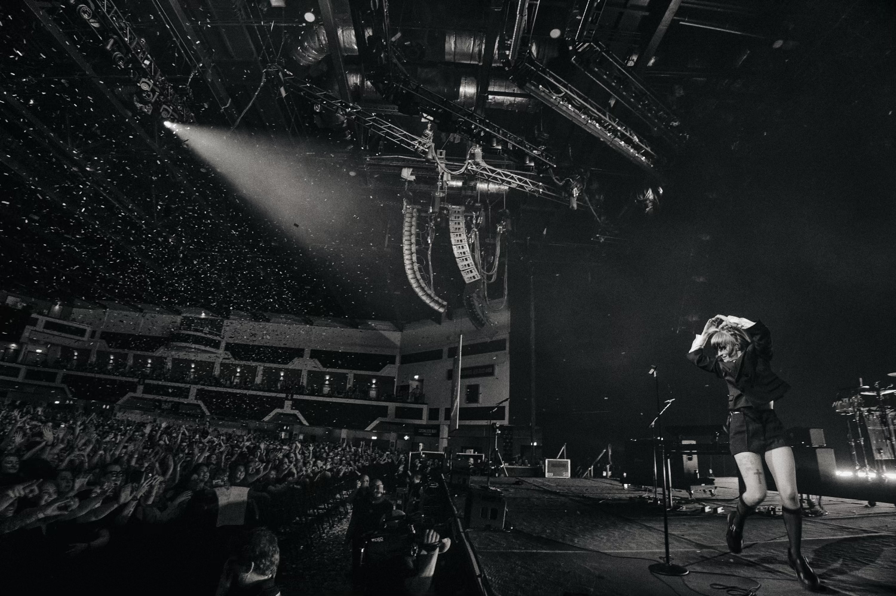
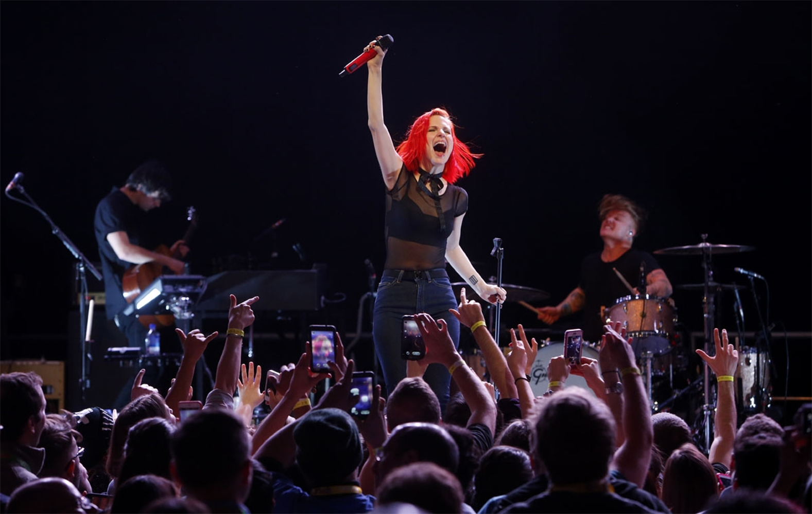
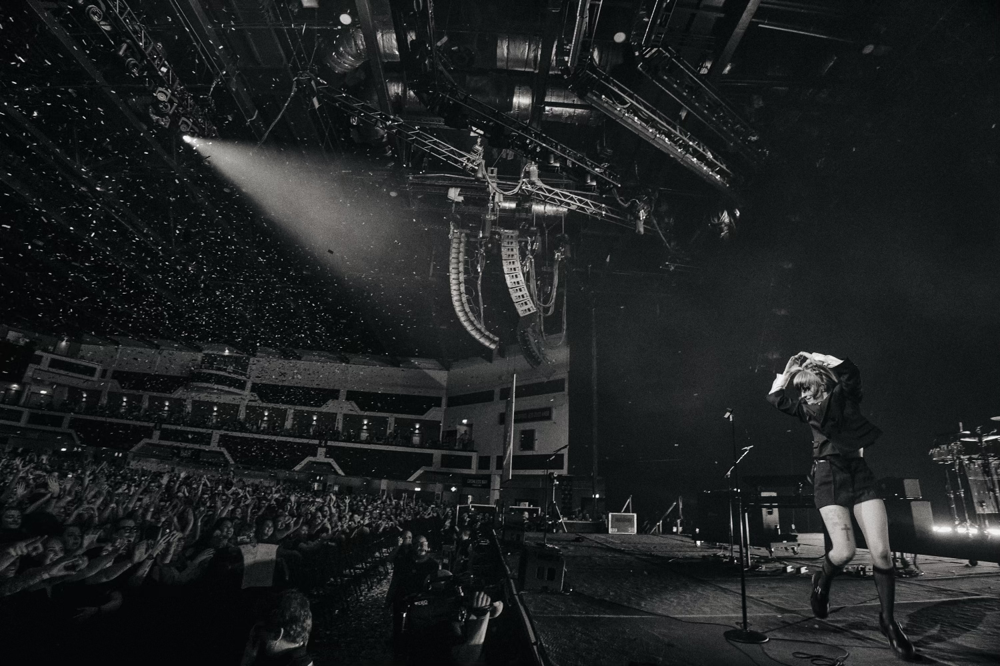
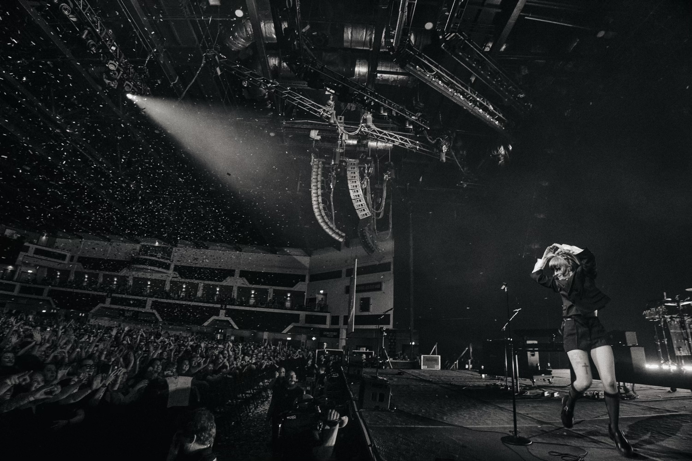
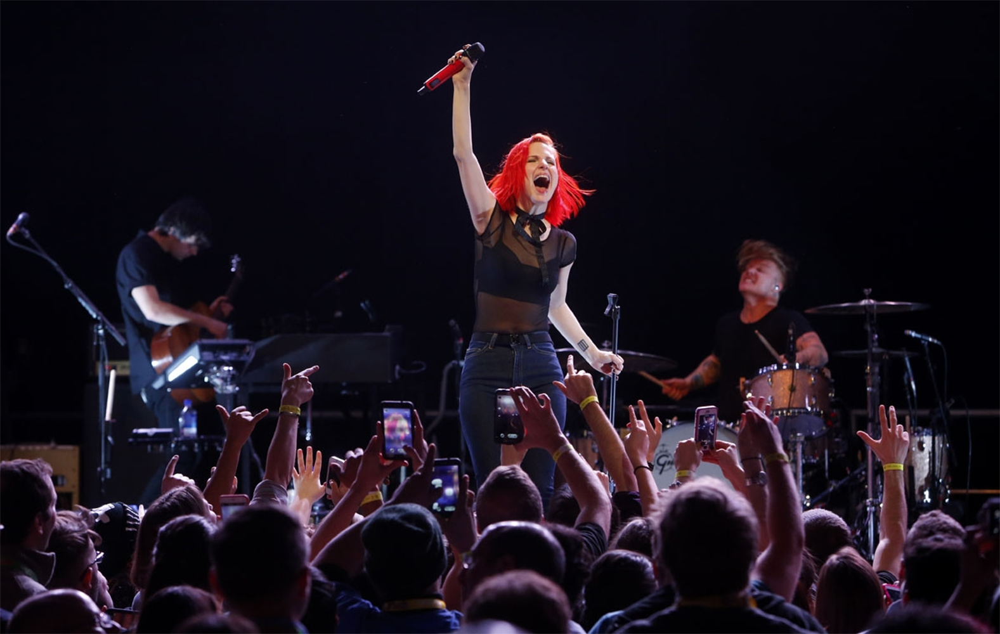
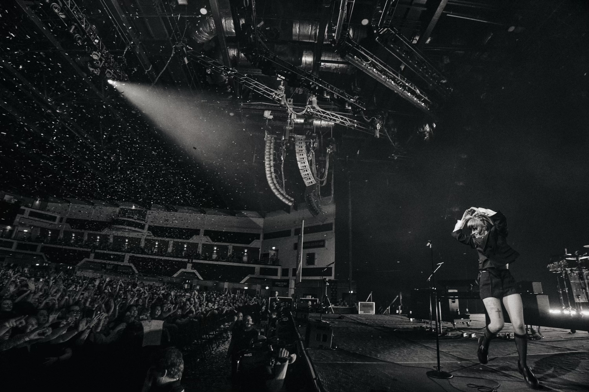
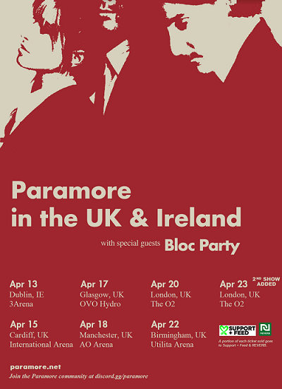
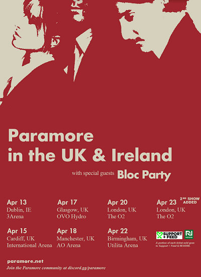

 





Somos una banda estadounidense de rock alternativo, actualmente integrados por Hayley Williams como cantante, Taylor York como guitarrista y Zac Farro como baterista.
Esta banda fue formada en Franklin, Tenessee en 2004, y lanzamos nuestro primer disco en 2005 llamado "All We Know is Falling",
recibio certificación de disco de oro.
proximo disco fue "Riot!", lanzado en 2007, convirtiendo a uno de nuestros temas favoritos "Misery Business" en nuestro primer tema en
en el Billboard Hot 100". Este disco, ademas de ser uno de nuestros favoritos, gano muchisimas certificaciones, entre ellas un
disco de platino en EE.UU, y alcanzo el puesto 15 en el Billboard 200.
En 2009, lanzamos "Brand New Eyes", que nos puso en segundo puesto en EE.UU y en primer puesto en lugares como Australia y el Reino Unido,
con canciones como "Ignorance", y "The Only Exception".
En 2011 se retiraron algunos de nuestros miembros, pero nos levantamos y en 2013 sacamos nuestro cuarto album, "Paramore",
acompañado de temas como "Still into YOu" y "Now".
En 2015 obtuvimos nuestro primer Grammy! Con "Ain't it Fun". Tambien tuvimos otra baja en nuestros miembros,
pero volvio uno de nuestros miembros iniciales.
En 2017, lanzamos "After Laughter", junto a "Told You So".
En 2023, sacamos nuestro ultimo album hasta la fecha, "This is Why", y despues de terminar nuestra gira, estamos al acecho,
esperando la oportunidad para sorprenderlos con nuestra musica, pasión, y cariño. ¡No se distraigan!
 
